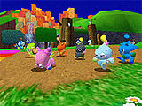
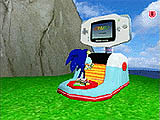

| ソニックアドベンチャー２ バトル | |
| 製品概要 | |
 | |
| |« 戻る | ページ１ | ページ２ | ページ３ | | |
| ＧＢＡとのリンクによってさらに楽しくなった人工生命体"チャオ" | |
| ユーザーの育て方次第で、おりこうなHEROチャオになったり、イジワルなDARKチャオに育ったり。行動、反応、知能、すべてにおいて進化した人工生命体"チャオ"の育成がさらに楽しくなりました！ | |
| ニンテンドーゲームキューブとゲームボーイアドバンス の連動を実現！ | |
 ニンテンドーゲームキューブ用ソフト『ソニックアドベンチャー2バトル』とゲームボーイアドバンス用ソフト『ソニック アドバンス』が、別フォーマット用のソフト同士で世界初の連動！
ニンテンドーゲームキューブ用ソフト『ソニックアドベンチャー2バトル』とゲームボーイアドバンス用ソフト『ソニック アドバンス』が、別フォーマット用のソフト同士で世界初の連動！もちろん、『ソニック アドバンス』を持っていなくてもゲームボーイアドバンスへの転送は可能です。 これからは、いつでもどこでもチャオといっしょです！ ＜ダウンロードページにて連動の説明を映像で紹介しています＞ |
|
| さらに楽しく便利になった「チャオワールド」 | |
|

チャオワールドにある「チャオガーデン」では、アクションステージで集めた小動物やカオスドライブによって、個性豊かなチャオを育てることができます。 またリニューアルされた「チャオ幼稚園」では、チャオの名前をつけたり、集めたリングによって様々なアイテムを購入できるようになりました！ |
|
|

さらに従来の「チャオレース」に加え、新たに「チャオカラテ」も新設し、友達のチャオと一緒に遊ぶ楽しさも一層充実しました！ ＜おでかけマシーン＞ このおでかけマシーンにチャオを入れると、ゲームボーイアドバンス側の「チャオのプチガーデン」に転送できます。 また「チャオのプチガーデン」で育てたチャオや木の実を「チャオガーデン」内に転送もできます。 |
|
| 『ソニック アドバンス』内 「チャオのプチガーデン」 | |
|
|
| ゲームボーイアドバンス版『ソニック アドバンス』 の詳細はこちら！ |
| « 戻る | |
| |
| 本ホームページに掲載する一切の文書･図版･写真等を、手段や形態を問わず複製、転載することを禁じます。 | |
| © Copyright SONIC TEAM, LTD. 2001 All Rights Reserved. | |